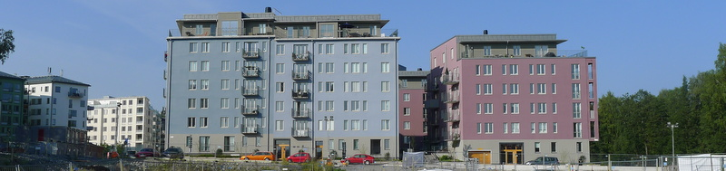

<ion-header>
  <figure>
    
  </figure>
  <ion-title text-center>
    Vem Bor Var v4.02
  </ion-title>
  <p></p>
</ion-header>

<ion-content padding>
  <ion-grid no-lines>

    <ion-row>
      <ion-col col-6>
        <ion-button size='small' expand='full'>Taxgatan 3</ion-button>
      </ion-col>
      <ion-col col-6>
      </ion-col>
    </ion-row>

    <ion-row>
      <ion-col col-6>
        <ion-button class='houseblue' size='small' expand='full' href='/show-floor#28' routerDirection='forward'>7
          trappor</ion-button>
      </ion-col>
      <ion-col col-6>
        <ion-button size='small' expand='full'>Taxgatan 7</ion-button>
      </ion-col>
    </ion-row>


    <ion-row *ngFor='let row of stairs'>
      <ion-col col-6>
        <ion-button class='houseblue' size='small' expand='full' href='/show-floor#2{{+row.substring(0,1)+1}}'
          routerDirection='forward'>{{row}}</ion-button>
      </ion-col>
      <ion-col col-6>
        <ion-button class='housered' size='small' expand='full' href='/show-floor#1{{+row.substring(0,1)+1}}'
          routerDirection='forward'>{{row}}</ion-button>
      </ion-col>
    </ion-row>

  </ion-grid>
</ion-content>

<ion-tab-bar>

  <ion-tab-button tab="search" href="/search" routerDirection='forward'>
    <ion-icon name="search"></ion-icon>
    <ion-label>Sök</ion-label>
  </ion-tab-button>

  <ion-tab-button tab="settings" href="/settings" routerDirection='forward'>
    <ion-icon name="settings"></ion-icon>
    <ion-label>Inställningar</ion-label>
  </ion-tab-button>


</ion-tab-bar>